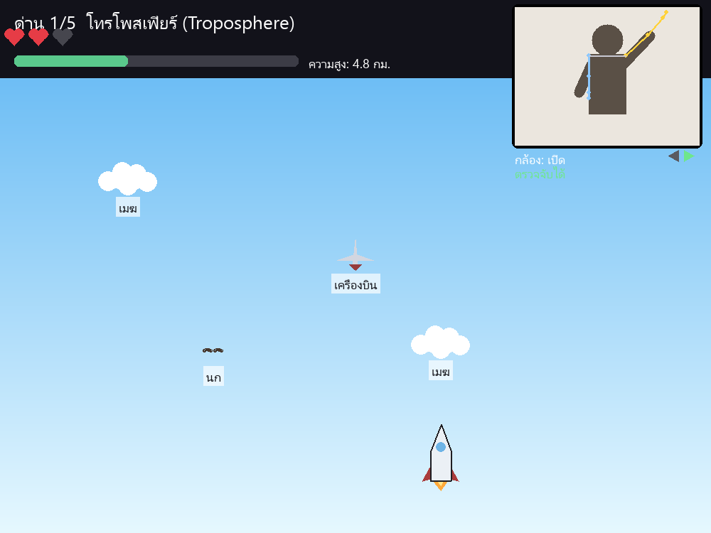
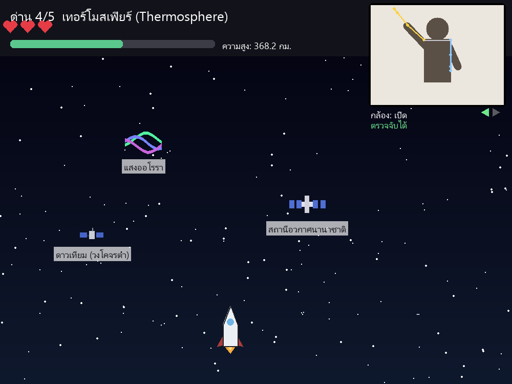
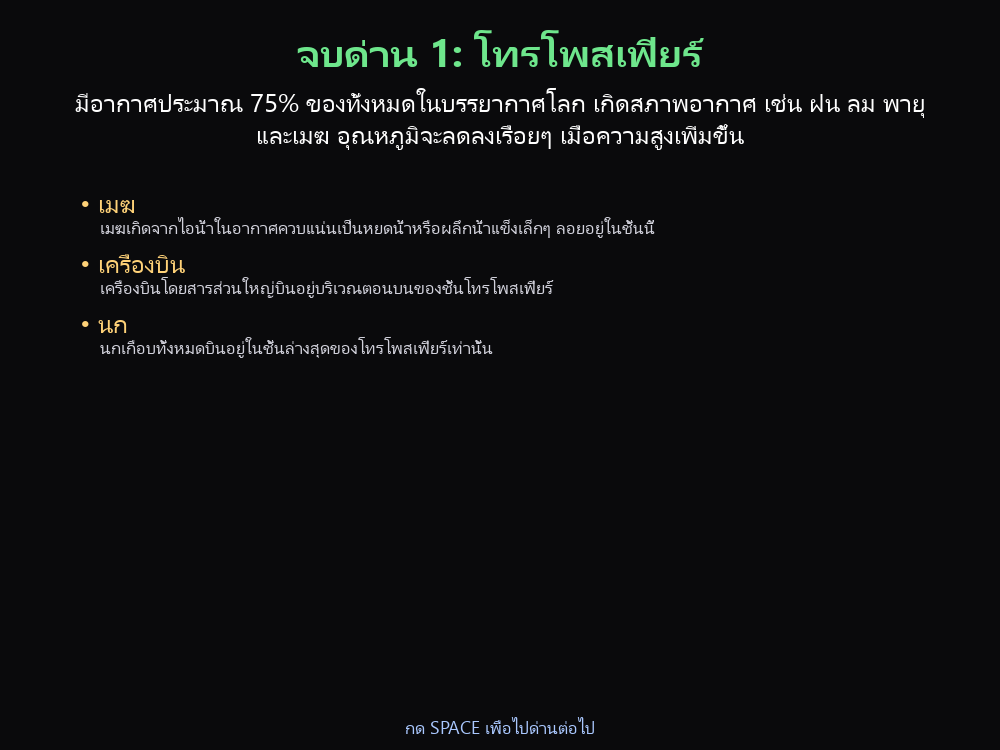

แทนที่จะควบคุมด้วยคีย์บอร์ดหรือจอย ผู้เล่นแค่ยกแขนตัวเองต่อหน้ากล้อง ยกแขนขวาจรวดก็เลี้ยวขวา ยกแขนซ้ายก็เลี้ยวซ้าย ระบบ AI จะจับตำแหน่งตั้งแต่หัวไหล่ไปถึงปลายนิ้วมือแบบเรียลไทม์ ผู้เล่นต้องพาจรวดหลบสิ่งกีดขวางที่ตกลงมา ไต่ระดับผ่านชั้นบรรยากาศของโลกทั้ง 5 ชั้น และได้ความรู้วิทยาศาสตร์ติดตัวกลับไปทุกครั้งที่จบด่าน โดยไม่รู้สึกเหมือนถูกยัดเยียดให้ท่องจำ
เหมาะสำหรับใช้เป็นสื่อการเรียนรู้เชิงโต้ตอบในห้องเรียน งานนิทรรศการวิทยาศาสตร์ หรือบูธกิจกรรมที่ต้องการจุดดึงดูดที่แปลกใหม่กว่าเกมทั่วไป



ระบบตรวจจับท่าทางในเกมนี้ใช้ AI ตัวเดียวกับที่อยู่เบื้องหลังแอปฟิตเนสและกล้องมือถือรุ่นใหม่ๆ (Google MediaPipe) ระหว่างพัฒนาต้องแก้โจทย์ทางเทคนิคเฉพาะหน้าหลายจุด ทั้งการอัปเดตให้ทันเวอร์ชัน AI model ล่าสุดที่เปลี่ยนวิธีทำงานทั้งระบบ การออกแบบให้โปรแกรมรู้ว่าแขนไหนอยู่ฝั่งซ้าย-ขวาของจอได้ถูกต้องไม่ว่าผู้เล่นจะหันตัวไปทางไหน และการไล่หาสาเหตุเชิงลึกของบั๊กที่ทำให้โปรแกรมอ่านไฟล์โมเดลไม่ได้ในบางสภาพแวดล้อม รายละเอียดเหล่านี้คือส่วนที่ทำให้งานสาย Computer Vision ใช้เวลาและความเชี่ยวชาญมากกว่าแอปทั่วไปอย่างมีนัยสำคัญ
| รายการงาน | ความซับซ้อน | ชั่วโมงโดยประมาณ |
|---|---|---|
| วิเคราะห์โจทย์และวางโครงสร้างระบบ | กลาง | 2–3 |
| ตั้งค่าระบบ AI และแก้ปัญหาความเข้ากันได้ของไลบรารี | สูง | 5–7 |
| ระบบตรวจจับท่าทางแขนแบบเรียลไทม์ | สูง | 8–12 |
| ระบบเกมหลัก (ฟิสิกส์ การชน คะแนน ชีวิต) | กลาง-สูง | 8–10 |
| ออกแบบภาพเวกเตอร์ของแต่ละด่าน | กลาง | 6–8 |
| ค้นคว้าและเขียนเนื้อหาความรู้ 5 ด่าน | กลาง | 3–4 |
| หน้าจอ UI ทั้งหมด (เมนู สรุปด่าน จบเกม) | กลาง | 4–5 |
| กล่องแสดงผลกล้องและเส้นโครงร่างแขน | กลาง | 3–4 |
| ทดสอบระบบทุกจุด (ด่าน การชน กรณีไม่มีกล้อง) | กลาง | 3–4 |
| แพ็กเป็นไฟล์ .exe และแก้ปัญหาการ build | สูง | 4–6 |
| เอกสารประกอบและคู่มือใช้งาน | ต่ำ | 2 |
| รวมโดยประมาณ | 48–65 ชั่วโมง |
หากต้องการปรับขอบเขตงาน เพิ่มด่าน เปลี่ยนเนื้อหาความรู้ หรือขยายไปยังแพลตฟอร์มอื่น ยินดีคุยรายละเอียดและ ปรับใบเสนอราคาให้ตรงกับความต้องการของแต่ละโครงการ